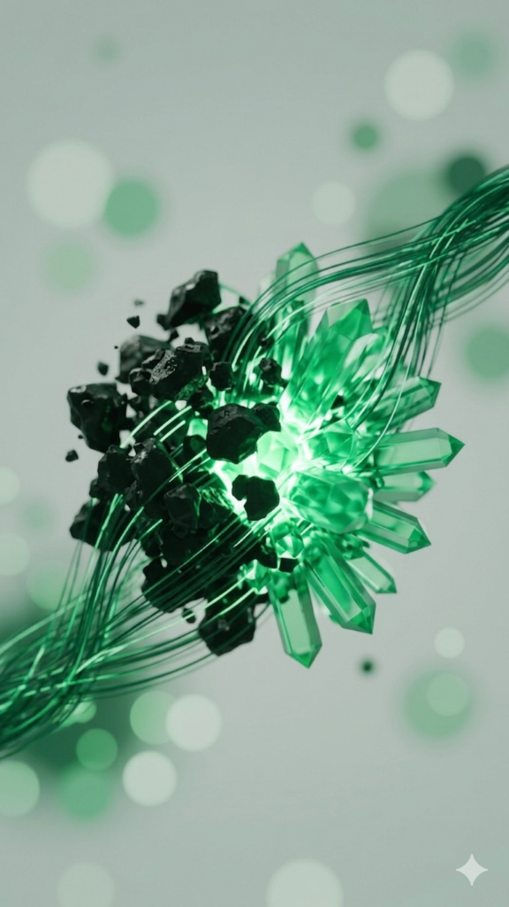
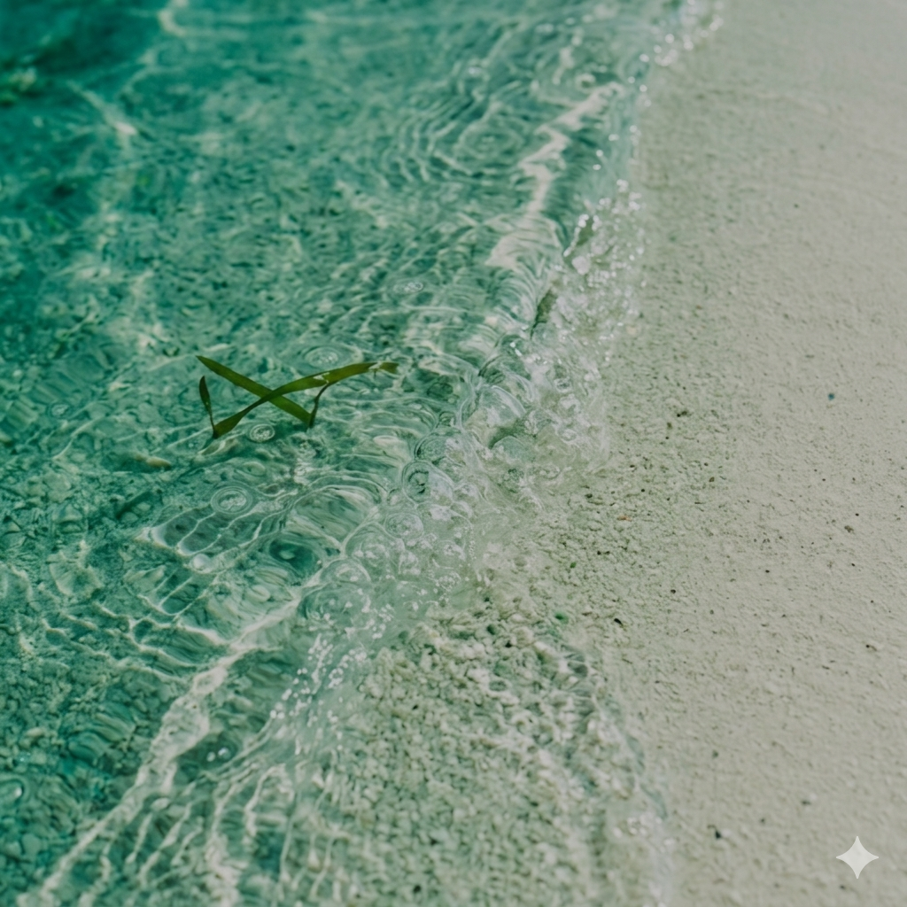
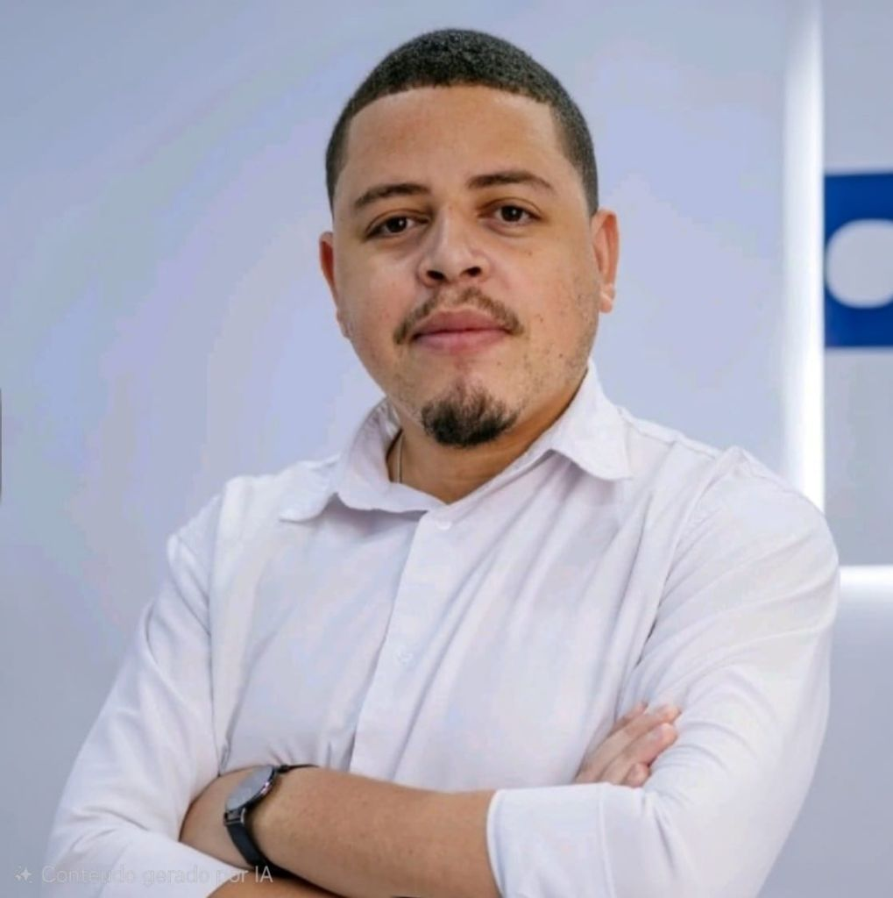

Wetlands Verdemar
Saneamento por zona de raízes para comunidades. Até 200.000 L/dia.
Onde sustentabilidade e inovação se tornam negócios reais. Desenvolvemos soluções para água, energia, construção e conectividade — com impacto ambiental positivo.
Nossa Proposta
Nossas tecnologias processam descartes complexos e restauram o fluxo natural — transformando o que sobra em valor real para o planeta e para os negócios.
Ver tecnologias
Quem Somos
A Verdemar Tech é um ecossistema de inovação fundado em São Paulo, Brasil. Desenvolvemos projetos que conectam tecnologia, sustentabilidade e impacto social — do tratamento de água à construção civil sustentável.
Nossos ProjetosTecnologias para tratamento e saneamento de água
Geração renovável e captura de CO₂
Materiais sustentáveis com sal residual das Usinas Verdemar
Soluções financeiras com propósito ambiental
Plataformas digitais com IA para saúde humana e veterinária
Do Mar à Solução
Saneamento por zona de raízes para comunidades. Até 200.000 L/dia.
Reaproveitamento do resíduo (salmoura) das usinas de osmose reversa. Condensação térmica para geração de sal residual destinado à Saltria.
Gerador híbrido de energia que combina geração hídrica, eólica e painéis solares fixos e portáteis — clean energy em qualquer ambiente.
Produtos da alvenaria fabricados com sal residual das Usinas Verdemar. A condensação térmica gera o sal que abastece esta linha de produtos.
Rede de resorts sustentáveis construídos com produtos Saltria. Turismo de impacto zero.
Agregador de redes Wi-Fi: combina de 3 a 6 sinais fracos de Wi-Fi e gera uma nova rede cabeada ou Wi-Fi mais estável e robusta.
Laboratório portátil em cubo. 4–8 leituras ambientais simultâneas: água, solo, ar e mais.
Cartão fintech verde com benefícios e recompensas por ações sustentáveis.
Plataforma de diagnóstico por imagem com IA. Gera pré-laudos em 90–120 segundos, cálculo automático de SUV, fusão PET/CT e gestão de radiofármacos.
Vertical do Pierre Med para medicina veterinária. Plataforma de diagnóstico por imagem com IA para clínicas e hospitais veterinários.
Solução mobile para gestão de pedidos e comandas integrada ao ecossistema.

Usina de Condensação Térmica
Reaproveitando o resíduo das usinas de osmose reversa (salmoura), nossa tecnologia de condensação térmica fecha o ciclo hídrico — transformando descarte industrial em recurso renovável. O sal gerado abastece a Saltria para criação de produtos de alvenaria, devolvendo o equilíbrio biológico às nossas águas. (Projeto experimental em desenvolvimento)
Propósito
Desenvolver tecnologias sustentáveis que transformem recursos naturais em soluções acessíveis, rentáveis e de alto impacto para pessoas, empresas e o planeta.
Até 2040, ser reconhecida como uma das empresas brasileiras referência em ecossistema de inovação verde — onde ciência, empreendedorismo e propósito convergem para regenerar o planeta.
Liderança

Fundador · Verdemar Tech
Empreendedor com foco em projetos que reaproveitam e reduzem resíduos, transformando o que seria descartado em soluções sustentáveis de alto impacto. Lidera o ecossistema Verdemar Tech, desenvolvendo soluções inovadoras nas áreas de água, energia, construção e tecnologia aplicada.
Fale Conosco
Estamos prontos para apresentar nossas soluções e discutir parcerias.
Localização
São Paulo, Brasil